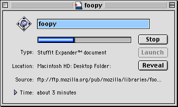
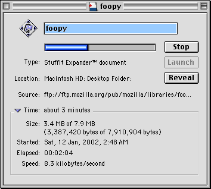
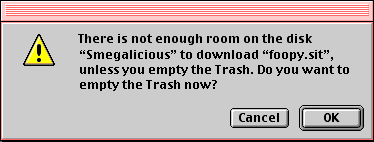
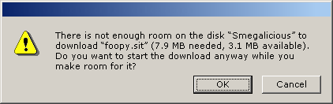

Managing downloads
Maintained by: Matthew ThomasContents
- Objectives
- Download Manager overview
- Download Manager menus
- Download Manager Toolbar
- Download Manager download list
- New Download dialog
- Download info window
- Download manager preferences
- Scheduling a download
- Performing a download
- Partially downloaded files
- Stopping a download
- Resuming a download
Objectives
- To allow users to download files in a simple, understandable, and reliable manner, interrupted by a minimum of alerts or save dialogs.
- To allow manipulation of partial downloads either from Mozilla or from the user’s file manager.
- To allow the user to maintain a record of previous downloads.
-
To rid the world of another pestilent
Close
button.
Download Manager overview
The centerpiece of the download interface is the Download Manager. The Download Manager window should open whenever the user schedules a download, or when she chooses Download Manager
from Navigator’s Tools
menu. If the Download Manager is already open, choosing the Download Manager
item should focus it, but starting a download should not.
Ideally, the Download Manager should be a separate executable from the rest of Navigator. For ease of implementation, however, this specification also describes the interface differences required if the Download Manager is part of the Navigator executable.
The Download Manager should not close unless explicitly closed by the user.
When the Download Manager first appears for a new profile, it should be 400 pixels wide and 150 pixels high near the bottom right corner of the screen. Any subsequent changes to its size and position should be remembered between Mozilla sessions.
The minimum width of the window should be enough to fit the four toolbar buttons (but not the toolbar text) with equal padding on the left and right.
Download manager menus
File
- New Download…
-
Opens the New Download dialog.
- Open Selected Item{s}
-
Tells the file manager to launch the selected file or files. This item should only be active if one or more downloads are selected and at least one of them is complete.
- Automatic Downloading
-
If on, automatically starts the first queued download whenever the number of downloads in progress is less than the maximum specified in the preferences. Turning it off allows the user to set up the Download Manager to perform a number of downloads, while delaying those downloads until she is online for an extended period and not trying to do other bandwidth-intensive things. Automatic Downloading is on by default.
- Stop
-
Stops the selected downloads. This item should only be active if one or more downloads are selected and at least one of them is in progress or queued.
On Mac OS, the Command+period keyboard shortcut should be supported in addition to Escape.
- Resume
-
Resumes the selected downloads — starting from scratch for any downloads where resuming is not supported, where the partial download has been deleted, or where the download is complete. This item should only be active if one or more downloads are selected and at least one of them is not already in progress or queued.
- Remove from List
-
Removes those selected downloads which are not in progress from the list. This item should only be active if one or more downloads are selected and at least one of them is not in progress.
- {Get Info | Properties}
-
Displays the Info or Properties windows for each of the selected downloads. (The wording
Get Info
should be used on Mac OS, andProperties
elsewhere.) This item should only be active if one or more downloads are selected. - Reveal Location
-
For all of the selected downloads, reveals and selects the downloaded items in the user’s file manager. This item should only be active if one or more downloads are selected, at least one of downloaded files are still present, and the user has a file manager set up to support revealing.
- Close
-
Closes the Download Manager.
- Quit
-
Closes the Download Manager, or (if the Download Manager is part of the Navigator or Mozilla executables) quits Navigator or Mozilla. This item is a confusing and annoying duplication of
Close
, so it should only be present on Mac OS where it is a basic UI requirement of the platform.
Edit
- Undo
- Redo
- Cut
- Paste
-
These items should always be inactive. They are included to keep the other items in the
Edit
menu in a position consistent with otherEdit
menus in Mozilla and other programs. - Copy
-
Copies the full paths (on Mac OS, just the names) of each of the downloads to the clipboard, on separate lines.
- Select All
-
Selects all the downloads in the download list.
- Download Manager Preferences…
-
Opens the Download Manager Preferences dialog.
View
- Toolbar
-
Toggles the visibility of the Toolbar.
- Progress
- Time
- Size
- Speed
- Date Started
- Type
- Source
-
Toggles the visibility of the respective columns in the download list. (The
Name
column must always be visible, so it is not included in the menu.) - Sort
-
Contains items for sorting the downloads in the download list. All items in this submenu should always be active, even when the relevant column is not displayed. Whether the last sort direction was Ascending or Descending should be remembered independently for each column.
- Reset Columns
-
Returns the choices of visible columns, column positions, column widths, and item ordering to their default settings.
Help
This menu should appear the same as the other Help
menus in Mozilla.
Bookmarks, Tools, and Window
If the Download Manager is not a separate program from the rest of Navigator, on Mac OS it should also have Bookmarks
, Tools
, and Window
menus to maximize stability of the menu bar between the Download Manager and other Navigator windows. These menus should appear and function just as they do in a Navigator window, with items that open Web pages obeying the Scripts & Windows
preference for using new or existing Navigator windows.
Shortcut menu
Each download in the list has the following shortcut menu.
Download Manager Toolbar
The Toolbar should contain four icon-only buttons, which perform the same as their equivalent menu items:
- Automatic Downloading
- Stop
- Restart
- Remove from List.
In addition, the bottom right corner of the Toolbar should contain text of the form x items remaining
, where x is the number of items which are currently downloaded or queued. (Localization note: Localizers should try to translate this text in such a way that the number comes first, so that the rest of the string does not wobble about when the number changes.)
If the window is too narrow to fit both the buttons and the x items remaining
text, the buttons should be given priority, and the text should be hidden completely.
Download Manager download list
The download list is similar to the Details view in Windows Explorer or the List view in the Mac OS Finder. Items in the list can be rearranged in the same way as in Navigator’s bookmarks manager, so that the user can arrange downloads in order of urgency.
By default, the download list displays the following columns.
- Name
-
This cell should contain a status icon for the download, followed by the eventual icon for the file, and the eventual name of the file.
The status icon for the download should be a green tick if the download was successful, or a red error sign if the download failed. An empty space should be shown for downloads which are in progress or which were explicitly stopped by the user.
Single-clicking on the name should make the field editable so that the file can be renamed. Double-clicking on either the icon or the name should open the Info windows for each of the selected downloads.
This column should be left-aligned, with an 0.5 em margin on the left to provide room for starting a marquee selection. (The status icon should not be selectable, so the space it takes up should be available to begin marquee selection as well.) The minimum width for the column should be enough to show the Progress and file icon followed by an ellipsis. The normal sort order for the column should be Ascending in alphabetical order of filename, case-insensitive.
- Progress
-
If the file is downloading and its eventual size is known, this cell should contain a determinate progress meter showing progress of the download. Otherwise, it should contain text indicating the current status:
- Queued
- Connecting
- Requesting
- Downloading
- Stopped
- Error
- Complete
This column should be left-aligned, though any progress meter should take up the entire width of the column. The minimum width for the column should be enough so that a progress meter is at least longer than it is thick. The normal sort order for the column should be Ascending as follows:
- Stopped
- Error
- Complete
- items with determinate progress, the most complete first
- Downloading
- Requesting
- Connecting
- Queued.
- Time
-
For completed or stopped downloads, this cell should show how long the download was in progress, starting from the last time the download was started from scratch. For downloads in progress, it should show the estimated time remaining. For queued downloads, the cell should contain an en dash.
For a variety of reasons, the time should be rounded:
- to save the user time, by discouraging him from staring fixatedly at the Download Manager as the estimated time ticks away second by second;
- to avoid a dizzying blinkendigits effect when many files are downloading at once;
- to only use one unit of measurement, ensuring that there is enough space to show the estimated time with unabbreviated units without overflowing the cell.
The time should be rounded as follows.
-
n < 7.5 seconds:
<10 seconds
-
7.5 seconds ≤ n < 55 seconds:
x0 seconds
-
55 seconds ≤ n < 1 minute 30 seconds:
1 minute
-
1 minute 30 seconds ≤ n < 59 minutes 30 seconds:
x minutes
-
59 minutes 30 seconds ≤ n < 1 hour 30 minutes:
1 hour
-
1 hour 30 minutes ≤ n:
x hours
.
This column should be right-aligned. The minimum width for the column should be 6 ems. The normal sort order for the column should be Ascending as follows:
- completed, stopped, or failed downloads, in order from quickest to slowest;
- downloads in progress, from least to most time remaining;
- queued downloads, in the order scheduled.
- Size
-
For completed downloads, this right-aligned cell should show the size of the download. For incomplete downloads where the size of the complete file is not known, it should show the amount downloaded so far. And for incomplete downloads where the size of the complete file is known, it should show text of the form
d of f
, where d is the amount downloaded so far and f is the size of the complete file. (Localization note: Localizers should try to translate this text in such a way that d comes before f, so that f does not wobble about with constant changes to d.) For queued downloads, the cell should contain an en dash.The sizes should be displayed in exact numbers of bytes, if there is enough room to do so for all downloads in the list (by default there should not be). Otherwise, the sizes for all downloads should be displayed using decimal units as follows.
-
n < 999 bytes:
x B
-
750 bytes ≤ n < 999,500 bytes:
x kB
(lower-casek
, no decimal places) -
999,500 bytes ≤ n < 999,500,000 bytes:
x MB
(1 decimal place) -
999,500,000 bytes ≤ n < 999,500,000,000 bytes:
x GB
(1 decimal place) -
999,500,000,000 bytes ≤ n:
x TB
(1 decimal place).
This column should be right-aligned. The minimum width for the column should be six ems. The normal sort order for the column should be Descending from largest to smallest.
-
n < 999 bytes:
The following columns should also be available, but should be off by default.
- Speed
-
For queued downloads, this cell should contain an en dash. Otherwise, it should show the speed of the download since the last time it was started from scratch, in the form
x/s
where x is the average amount downloaded per second. x should always be rounded as described for theSize
column above, regardless of the column width. This cell should be right-aligned. - Date Started
-
For queued downloads, this cell should contain an en dash. Otherwise, it should show the date and time when the download was first started, in either the short or long date format specified in the relevant platform control panel. The long date format should only be used if there is room to use it for all downloads in the download list.
This column should be right-aligned. The minimum width of the column should be XXX. The normal sort order for the column should be from oldest to newest, with queued downloads last.
- Type
-
The human-readable description of the file type, such as
Gnumeric spreadsheet
orStuffIt archive
. - Source
-
The URI of the remote source of the download.
By default, the download list should be sorted by Date Started (with queued downloads listed in the order they were added), even if that column is not shown. The sort order can be changed by clicking on the column header, or choosing an item in the Sort
submenu of the View
menu. Secondary sorting can be achieved by choosing the secondary sort followed by the primary one. For example, if the user clicks on the Size
column header twice (to sort from smallest to largest) and then on the Name
column header once, downloads should be sorted by filename and multiple downloads with the same name should be sorted smallest to largest.
Two seconds after a download halts for whatever reason, if there are downloads remaining but they are all scrolled out of view, the download list should auto-scroll so that the first remaining queued download in the list is as close as possible to the top of the window without leaving empty space at the bottom of the window.
New Download dialog
[TBD]
Download Info/Properties window
The Download Properties window (called Download Info on Mac OS) for a download can be opened by doing any of the following:
- double-clicking on any download in the Download Manager when the download is selected;
- selecting the download in the Download Manager, and pressing Enter with or without any modifier (except on Mac OS, where pressing Enter should allow renaming of the download);
-
selecting the download in the Download Manager, and choosing
Get Info
orDownload Properties
from theFile
menu, or clicking the equivalent Toolbar button.
The Download Info/Properties window can be closed by doing either of the following:
- clicking the window manager’s close button;
- typing accel+W.


- Title bar icon (Windows and Mac)
-
This icon should match the icon in the destination folder itself, showing the progress being made downloading the file. The icon can be dragged to another folder to move the download.
- Icon
-
The eventual icon of the downloaded file.
- Name field
-
This field contains the name of the downloaded file. Pressing Escape in this field should restore the value of the field to the current name of the download (minus the
.downloadextension on Windows). Pressing Enter should rename the download to the value of the field, unless the field is empty, in which case it should act the same as Escape. Input in the field should be restricted as appropriate for a filename: it should not be able to type a name longer than the operating system allows, and characters which are not allowed in a filename on that platform should be automatically converted to dashes.
Other information in this window should be presented as specified above for the main Download Manager window, with the exception that all fields should be left-aligned, and units for the Speed
field should be spelled out in full.
Download Manager preferences
The following options should be changable from the Download Manager’s self-contained Preferences dialog:
- default download folder (reading from, and writing to, the equivalent setting in the Internet control panel on Mac OS);
- the number of stopped downloads to retain in the download list;
- the maximum number of simultaneous downloads;
- whether stopped downloads should be restarted automatically when the Download Manager (or Navigator) is launched;
- how many times (if at all) downloads should be retried if they fail for a non-permanent reason.
[design TBD]
Scheduling a download
A download can be scheduled by doing any of the following:
- clicking
Save
in the Save dialog invoked bySave Link As…
; - opening a file in Navigator where the user’s preference for that MIME type is
Save File
orSave then Open
; - dragging a link or Internet shortcut into the Download Manager window.
The Save As
, Edit
, Print
, and Send Page
commands in the File
menu operate on a page which is already displayed in a Navigator window browser window, and any extra files (such as unloaded images) which need to be loaded for these operations should not be shown in the Download Manager. They should use a separate progress window (with a single Cancel
button) instead.
The Download Manager should start the next queued download automatically when all of the following are true:
- the Download Manager (or Navigator, if the same executable) is launched;
- Automatic Downloading is on;
- the number of downloads in progress is less than the limit specified in the Download Manager preferences.
The next queued download
means the first queued download in the list given its current sort order.
Performing a download
If the eventual size of a file is known when it is downloaded, the download manager should attempt to check that there is enough room on the disk (or in the user’s disk quota) before beginning the download. If there is not enough room, the download manager should first calculate whether emptying the Trash, Recycle Bin, or $HOME/.Trash directory would make enough room.
If so, it should put up a confirmation alert as follows:

If emptying the Trash or Recycle Bin would not make enough room, the download manager should put up a confirmation alert as follows:

If a download fails, the Download Manager should request attention from the user using the standard non-modal method provided by the platform (e.g. flashing the Download Manager item in the taskbar or application menu).
Partially downloaded files
A partially downloaded file should be stored in the same place, and with the same name, as that intended for the complete file. (On Windows only, a .download extension should be appended to the filename.) This allows the user to find the file to move it, rename it, apply a label or emblem to it, or even delete it while the download is in progress. Most importantly, it allows her to resume an interrupted download by double-clicking on the file’s icon where she expects it to be.
On those platforms which support it, a partial download should have a progress meter in its icon, indicating approximate progress of the download. Similarly, a stopped download should have a stop emblem in its icon, showing that the download was not completed. (On Windows 95 and later, this can be implemented by registering an icon handler for the .download file extension while Mozilla is installed; on Mac OS 8.0 and later, it can be implemented using IconServices.)
Stopping a download
A download can be stopped by doing any of the following:
- selecting the file in the Download Manager, and choosing the Stop command;
-
opening the shortcut menu for the file in Windows Explorer or the Mac OS Finder, and choosing
Stop Download
; - deleting the file.
Resuming a download
A download can be resumed by doing any of the following:
- selecting the file in the Download Manager, and choosing the Resume command;
-
opening the file in Windows Explorer or the Mac OS Finder, or choosing
Resume Download
from the shortcut menu for the file.